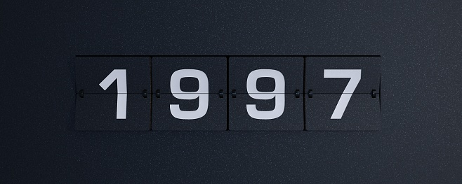

M6 consacre généralement ses soirées du samedi aux séries télévisées américaines fantastiques. Tout a commencé le 28 octobre 1995 avec une soirée fantastique en prime-time incluant le double épisode
La Colonie 1/2 et La Colonie 2/2 de la série X-Files : Aux frontières du réel et l'épisode Dernière limite de la série Les Contes de la crypte. M6 a ensuite réitéré l'opération le 2 décembre 1995 avec
les épisodes Ombre mortelle et Quand vient la nuit d’X-Files et l'épisode La Perle noire des Contes de la crypte.
La case devient « Les samedis fantastiques » du 6 janvier 19962 au 29 novembre 19973, avec la rediffusion intégrale d’X-Files (3 épisodes par semaine) et deux épisodes des Contes de la crypte.
Suivront les séries Au-delà du réel : L'aventure continue et Burning Zone : Menace imminente.
M6 décide ensuite de créer La Trilogie du samedi dont la diffusion débute le 6 décembre 1997 sur M6. Les premiers programmes diffusés sont Le Caméléon, Dark Skies : L'Impossible Vérité et Profiler. Après l’arrêt de Dark Skies : L'Impossible Vérité, la série est rapidement remplacée par The Sentinel. Plus tard, X-Files sera diffusé le jeudi soir à partir de la cinquième saison et Stargate SG-1 est envoyé le vendredi soir avant de revenir4.